From a picture to a profile
A character in CharDB belongs to a species in a community. You make one from the community it belongs to, on a single form: its picture, its name, its species and rarity, its traits, and how it is shown and offered to others.
The picture comes first. It is hard to describe a character you cannot see, so the form keeps the picture in view while you fill in everything else.
Pick it before anything else and keep it in view
It becomes the character's headline picture
It goes through review like any other upload
If the picture fails, the character is still made
Open the community the character belongs to and choose Create Character in the top bar. The form opens with the picture in its own column on the left and everything else on the right.
On a narrow screen, such as a phone, the picture moves above the form instead of beside it.
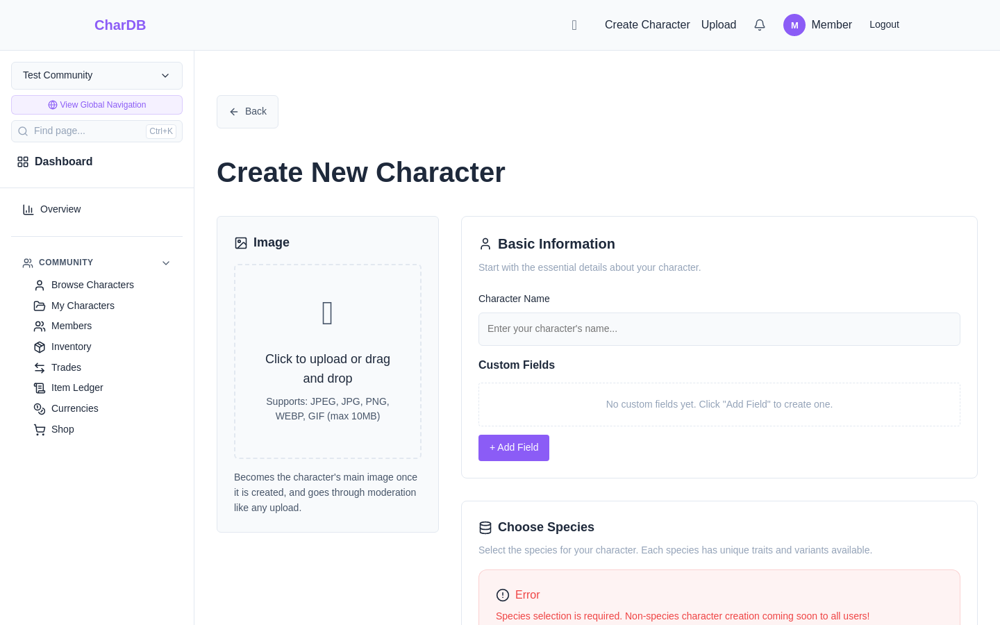
Click the drop zone or drag a file onto it. JPEG, PNG, WebP and GIF files up to 10 MB are accepted. The picture shows straight away; Remove image takes it off so you can choose another.
Nothing is uploaded yet. The picture waits on the form until you create the character, and is uploaded then.
Sensitive Content marks the picture as sensitive and asks for a short description. Sensitive uploads are not accepted at the moment, so ticking it stops the form from submitting until you untick it or remove the picture.
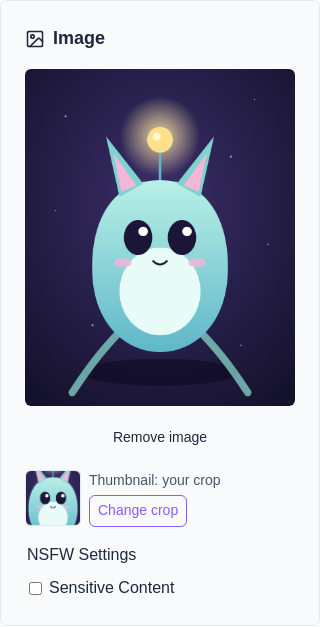
The picture's square thumbnail is what stands for the character wherever it is shown small: character cards, and the character picker on the upload page. Character art is often full-body, and the middle of a full-body drawing is a torso, so it is worth saying where the face is.
Under the picture, a small square shows the thumbnail as it will be. Before you choose it reads “Thumbnail: centre of the image”. Choose crop opens the cropper: drag the picture under the square and use the zoom slider to tighten in, then Use this crop. The line changes to “Thumbnail: your crop”, and the button becomes Change crop.
Only the thumbnail is framed. The picture itself is never cut down, and the character's page shows it whole. See Thumbnail Framing for more on how thumbnails work.
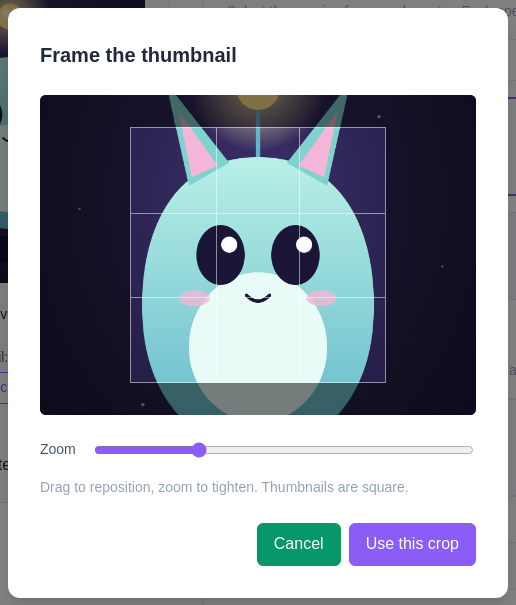
The rest of the form runs top to bottom. On a wide screen the picture stays pinned beside it as you scroll, so the character is in view while you choose its traits.
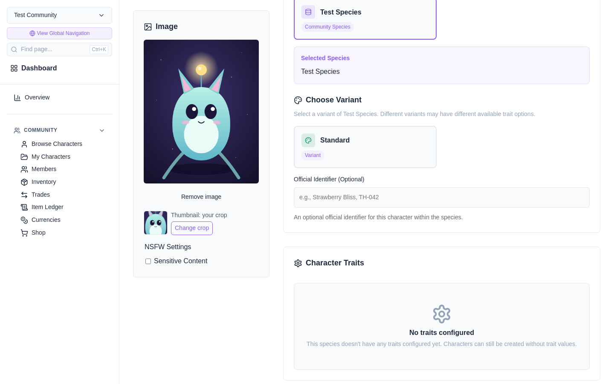
Create Character opens a dialog that ticks off each step as it happens: making the character, uploading the picture, and setting it as the main image. A large picture can take a moment to upload, so the bar shows how far it has got. The dialog stays in front of the form until everything has finished.
When it is done, View character takes you to it, and Create another clears the form for the next one, keeping the species you chose. After spending an MYO ticket, the second button is Back to inventory instead.
The picture goes to the community's moderators like any other upload. Until one approves it, the character shows a pending moderation placeholder where the picture will be. The picture has the same visibility as the character, so a private character's picture is private too.
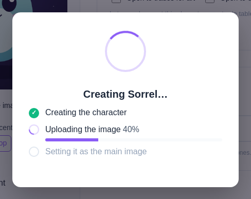
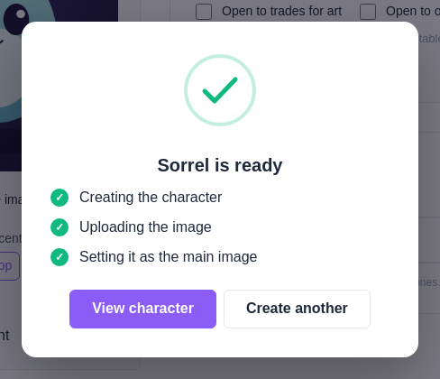
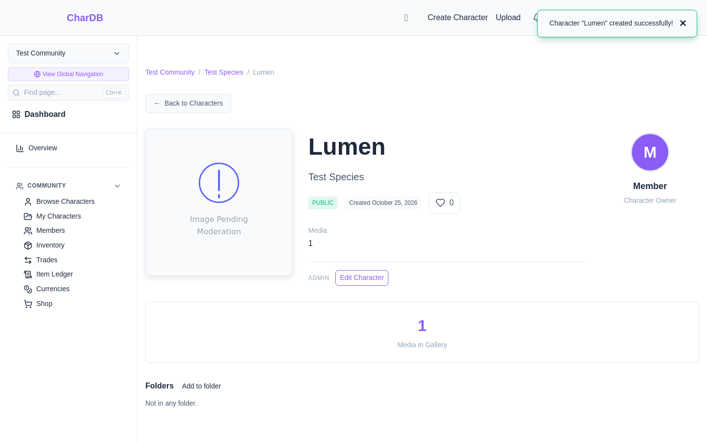
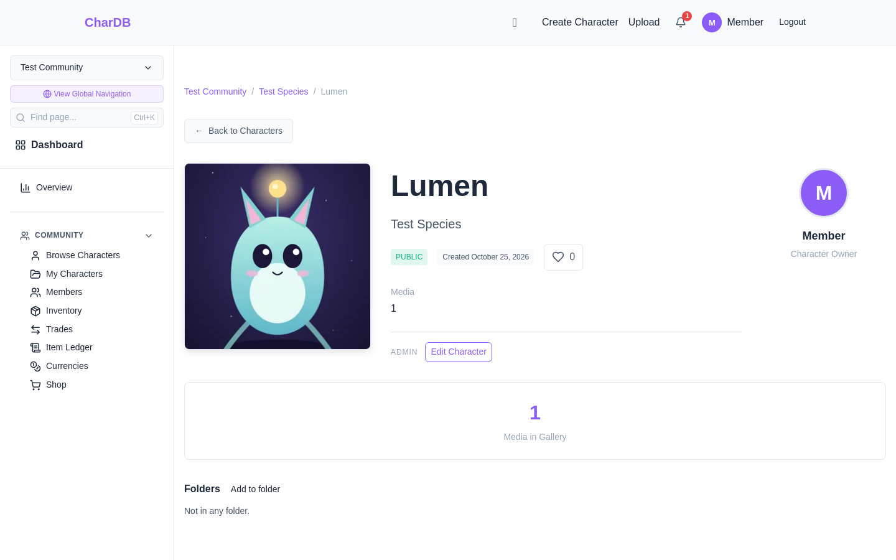
Once the picture is approved, the thumbnail you framed stands for the character in lists of characters, such as My Characters, and in the character picker on the upload page.
Until then those places show the character's initial or a pending moderation placeholder instead.
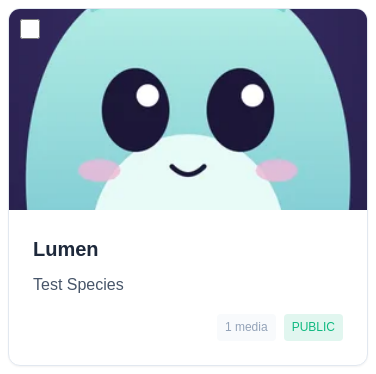
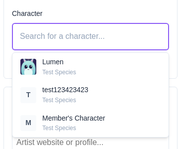
The character is made first and the picture second, so a problem with the picture never costs you the character. The dialog marks the step that failed and says the character was still created.
If the character itself could not be made, nothing was created, and Back to form returns you to the form just as you left it.
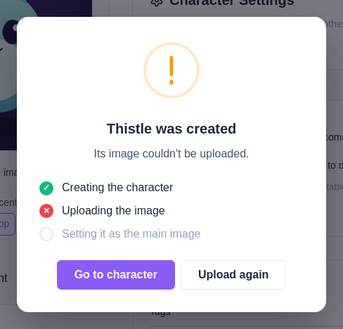
Edit Character shows the current main image in the same column, with its thumbnail beneath, so you can see the character while you edit it. Upload a new image opens the upload page for this character.
Adjust framing opens the picture's own page, where its thumbnail can be re-framed. Only whoever uploaded the picture can do that, and only once it has been approved.
A new upload does not replace the main image on its own. To make a different picture the main one, use Set as Main on it in the gallery on the character's page.
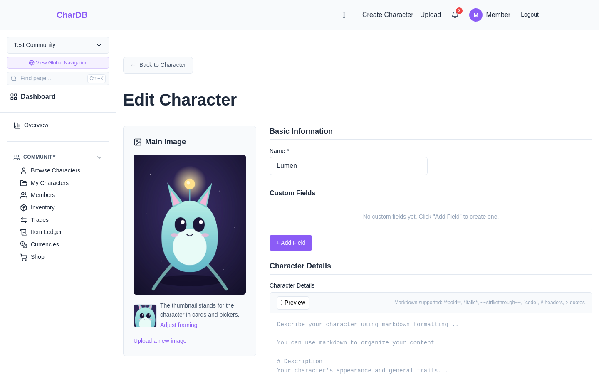